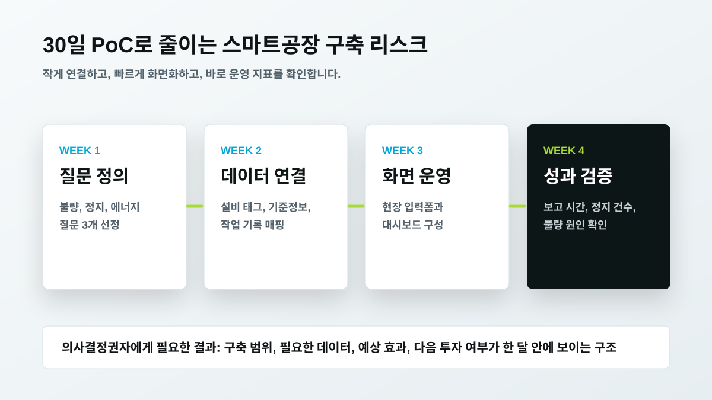

컨포트랩 노코드 제조 데이터 플랫폼: 스마트공장 구축 기간 단축 가이드
스마트공장 구축이 길어지는 이유는 대개 화면 디자인이 아니라 데이터 연결입니다. 설비 태그, 기준정보, 작업 기록, 품질 이력, 에너지 사용량이 서로 다른 이름과 시간 기준으로 존재하면 프로젝트는 개발보다 정리 작업에서 멈춥니다. 컨포트랩의 노코드 제조 데이터 플랫폼은 이 병목을 줄이기 위해 운영자가 묻는 질문을 먼저 정하고, 필요한 데이터와 화면을 빠르게 연결하는 접근입니다.
노코드가 필요한 지점은 화면이 아니라 변경 속도입니다
제조 현장은 같은 업종 안에서도 운영 규칙이 다릅니다. 같은 품질 이상이라도 한 공장은 설비 알람을 먼저 보고, 다른 공장은 원재료 로트와 작업 조건을 먼저 봅니다. 이 차이를 모두 개발 요구사항으로 넘기면 초기 구축 기간이 길어지고, 현장 피드백을 반영하는 데도 시간이 걸립니다. 노코드 제조 데이터 플랫폼의 가치는 화면을 예쁘게 빨리 만드는 것이 아니라, 현장 규칙이 바뀔 때 데이터 매핑과 운영 화면을 빠르게 바꾸는 데 있습니다.
글로벌 제조 IT 흐름도 이 방향과 맞닿아 있습니다. DMG MORI의 TULIP은 사람과 기계를 디지털 프로세스로 연결하고 노코드 플랫폼으로 MES를 구성한다는 메시지를 제시합니다. Infor MES도 복잡한 제조 운영을 하나의 플랫폼에서 제어하고, low-code/no-code 기반 구성을 강조합니다. Microsoft의 제조 자료는 엣지와 클라우드 데이터를 연결하고 AI 기반 공장 운영을 위한 토대를 설명합니다. 로크웰 오토메이션의 FactoryTalk DataMosaix는 산업용 DataOps 관점에서 IT·OT 데이터를 통합하는 흐름을 보여줍니다. 국내에서는 CJ올리브네트웍스, LG CNS Factova, 엠아이큐브솔루션, 에임시스템 등이 MES, 설비 데이터, 품질, AI 분석을 분리된 기능이 아니라 제조 운영 고도화 흐름으로 다룹니다.

구축 기간을 줄이는 첫 단계는 질문 3개입니다
스마트공장 프로젝트를 시작할 때 “어떤 시스템을 도입할까”보다 먼저 정해야 할 것은 “무엇을 줄일까”입니다. 불량률, 설비 정지, 작업공수, 에너지 낭비 중 무엇을 먼저 줄일지 정하면 필요한 데이터가 명확해집니다. 예를 들어 불량률을 줄이려면 검사 결과, 작업 조건, 설비 알람, 로트 정보를 연결해야 합니다. 설비 정지를 줄이려면 정비 이력, 알람, 전류, 진동, 온도 같은 설비 신호가 필요합니다. 에너지 비용을 줄이려면 라인별 생산량과 전력 사용량을 같은 시간 기준으로 봐야 합니다.
컨포트랩은 초기 PoC를 질문 3개로 시작하는 방식을 권합니다. “지난주 불량률이 오른 라인은 어디인가”, “반복 정지 설비는 무엇인가”, “생산량 대비 에너지 사용량이 비정상적인 구간은 어디인가” 같은 질문입니다. 이 질문에 답하는 데 필요한 데이터만 먼저 연결하면, 전 공장 데이터를 한 번에 모으는 프로젝트보다 빠르게 효과를 확인할 수 있습니다.

기존 MES와 ERP를 건드리지 않고 시작해야 합니다
노코드 제조 데이터 플랫폼은 기존 MES나 ERP를 무너뜨리는 방식으로 도입하면 안 됩니다. ISA-95 관점에서도 기업 시스템과 제조 제어 시스템은 각자의 역할이 있습니다. 컨포트랩은 기존 시스템의 역할을 유지하면서, 운영자가 매일 보는 데이터와 조치 흐름을 연결하는 보완 계층을 설계합니다.
이 방식의 장점은 의사결정권자가 부담을 낮게 가져갈 수 있다는 점입니다. 전체 시스템 교체는 예산, 일정, 교육, 데이터 이관 리스크가 큽니다. 반면 특정 라인의 품질 이상, 특정 설비의 반복 정지, 특정 에너지 낭비 구간처럼 과제를 좁히면 기존 시스템 위에 필요한 데이터만 읽어와도 PoC가 가능합니다. 이후 효과가 확인되면 적용 라인과 데이터 범위를 확장하면 됩니다.

좋은 노코드 플랫폼의 조건
첫째, 설비 데이터와 현장 입력이 같은 시간 기준으로 묶여야 합니다. 둘째, 현장 담당자가 수정할 수 있는 운영 화면과 입력폼이 있어야 합니다. 셋째, 권한과 이력 관리가 필요합니다. 누가 어떤 데이터를 보고 어떤 조치를 남겼는지 추적되지 않으면 AI 분석의 신뢰도가 떨어집니다. 넷째, 제조 AI로 확장 가능한 데이터 구조가 필요합니다. 대시보드만 빠르게 만든 플랫폼은 처음에는 편하지만, 원인 분석과 예지보전으로 넘어갈 때 다시 정리해야 합니다.
컨포트랩은 노코드 화면, 설비 데이터 수집, 제조 AI 에이전트를 따로 보지 않습니다. 운영 화면에서 이상을 확인하고, AI가 원인 후보를 제안하고, 담당자가 조치 결과를 남기면 그 기록이 다시 데이터로 돌아와야 합니다. 이 닫힌 흐름이 있어야 단순 전산화가 아니라 운영 개선으로 이어집니다.

자주 묻는 질문
노코드 제조 데이터 플랫폼은 MES를 대체하나요?
대체보다 보완에 가깝습니다. 기존 MES, ERP, SCADA의 데이터를 유지하면서 현장별 입력폼, 대시보드, 알림, AI 질문을 빠르게 구성하는 계층으로 보는 것이 현실적입니다.
스마트공장 구축 기간을 줄이려면 무엇부터 정해야 하나요?
기술 스택보다 운영 질문을 먼저 정해야 합니다. 불량, 정지, 에너지, 작업공수 중 어떤 지표를 줄일지 정하면 필요한 설비 데이터와 화면 범위가 빠르게 좁혀집니다.
컨포트랩은 설비 데이터, 현장 입력, 노코드 운영 화면, 제조 AI 질문을 한 흐름으로 설계합니다.
도입 문의